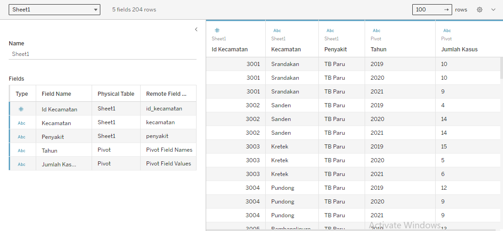

Data yang digunakan merupakan data dari Badan Pusat Statistik (BPS) Kabupaten Bantul dengan proses pencarian sebagai berikut:
- Membuka laman BPS Kabupaten Bantul
https://bantulkab.bps.go.id/
- Membuka data Sosial dan Kependudukan bagian kesehatan

- Memilah 1 dataset dari 5 dataset yang tertampil, yaitu dataset dengan judul “Prevalensi Jenis Penyakit per Kecamatan, 2018–2021”

Dataset yang dipilih berisi data prevalensi penyakit dari 18 Kecamatan di Kabupaten Bantul selama periode 2019–2021. Data ini mencakup informasi mengenai TB Paru, Pneumonia Balita, DBD, dan Diare.

B. Mengolah dan Visualisasi
Pengolahan data dilakukan sebelum memvisualisasikan data menggunakan aplikasi Tableau. Berikut merupakan langkah-langkah dalam mengolah dan mempersiapkan data sebelum dilakukan visualisasi data:
- Menghubungkan data ke dalam Tableau
Data yang dihubungkan/dimasukkan ke dalam Tableau yaitu file dataset yang telah dipilih (format .xls/.xlsx/.csv) dan data geospasial (format .shp) untuk visualisasi berbentuk peta wilayah.
- Menyusun dan menggabungkan data
Dilakukan pivot data untuk atribut 2019, 2020, dan 2021 pada dataset “Prevalensi Jenis Penyakit per Kecamatan, 2019-2021” dengan nama file “Data”.

Pivot data menghasilkan 2 atribut baru yang kemudian diberi nama Tahun dan Jumlah Kasus.
Dilakukan penyesuaian jenis atribut menjadi Number (whole) untuk atribut Jumlah Kasus.
Dilakukan penggabungan kedua data (dataset “Data” dan data spasial “Administrasi_Desa_AR_25K”) menggunakan relasi atribut Kecamatan pada dataset “Data” dan atribut Wadmkc pada data spasial “Administrasi_Desa_AR_25K”.
- Visualisasi data
Visualisasi peta wilayah:

Visualisasi tabel jumlah kasus per penyakit:

Visualisasi grafik batang tren penyakit:

Visualisasi grafik pie jumlah kasus per tahun:

Data yang digunakan merupakan data dari Badan Pusat Statistik (BPS) Kabupaten Bantul dengan proses pencarian sebagai berikut:
- Memilih template html di html5up.net
http://html5up.net
- Mengedit template di aplikasi
Kami mengedit template html yang telah dipilih menggunakan Visual Studio Code (VS Code), yaitu sebuah teks editor ringan dan handal yang dibuat oleh Microsoft untuk Windows, macOS, dan Linux. VS Code mendukung berbagai bahasa pemrograman seperti HTML, CSS, JavaScript, Phyton, PHP, dan sebagainya.
- Bahasa pemrograman yang digunakan
"HTML"
Hyper Text Markup Language (HTML) merupakan bahasa markup yang digunakan untuk membuat halaman web dan menampilkan berbagai informasi di browser internet. HTML terdiri dari kode-kode tag yang menginstruksikan browser untuk menampilkan halaman sesuai dengan yang diinginkan. Dokumen HTML dapat memuat teks, gambar, audio, maupun video. Pada dasarnya, elemen HTML terdiri dari "head" yang berfungsi untuk memberikan informasi atau mendeklarasikan dokumen tersebut dan "body" yang berfungsi untuk menentukan bagaimana isi suatu dokumen ditampilkan pada browser.
"CSS"
Cascading style sheet (CSS) merupakan perintah atau aturan-aturan yang digunakan untuk menentukan bagaimana elemen HTML dapat ditampilkan agar tampilannya menjadi lebih menarik.
Tanpa CSS:

Dengan CSS: